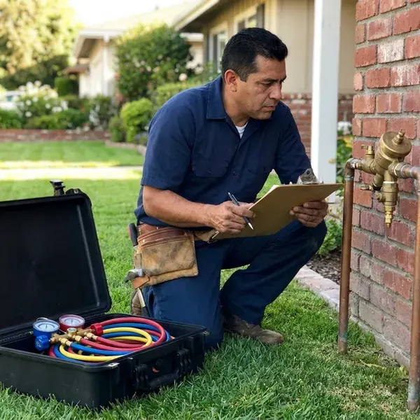

Backflow Preventer Installation in West Valley City, UT
From residential pressure vacuum breakers to commercial RPZ assemblies, we handle backflow preventer installation across West Valley City, UT.
- Licensed Utah Plumbers
- Local Crews
- Certified Testers
- Code-Compliant Devices

Get Backflow Compliant Without the Hassle in West Valley City, UT
Call now for a quote on backflow preventer installation, with the initial certification test.
Backflow Devices for West Valley City, UT Homes and Businesses
Most backflow work in West Valley City, UT starts with a letter from the water provider. The notice spells out the device and the due date, and our job is to install exactly that assembly, at the right height and orientation, then certify it and send the report so the account stays clear. Bring us the letter.
Our expertise includes:
- Certified backflow testers on staff
- Compliance with Utah plumbing codes
- Initial certification testing and report filing

Additional Plumbing Installation Services in West Valley City, UT
We install water heaters, pumps, lines, and fixtures across West Valley City, UT with careful, permitted work that passes inspection the first time.


Customers
Why Choose BPK Plumbing for Backflow Preventer Installation in West Valley City, UT?
Install and certification in one visit is how we prefer to work. You do not have to book a separate tester, and the paperwork goes to your water provider from us, usually the same week, so you are not chasing a report while the deadline on your notice runs out. It is a single appointment.
- Property Protection, Stopping backflow keeps contamination out of every fixture and avoids costly cleanup.
- Code Compliance, Many towns in Utah require devices on certain connections, and we install exactly what yours requires.
- Tested Onsite, A certified tester checks every new device before it goes into service.
Citywide Coverage
Every neighborhood in West Valley City is in our service area for backflow installs. Downtown storefronts and suburban homes both get the same crew, and that crew knows the device the local provider expects on irrigation, fire lines and commercial mains. One visit covers most jobs.
Experienced Team
Selecting, installing and testing are all done by the same people. That keeps responsibility in one place, and if a device fails its first test, the plumber who installed it is the one who rebuilds it, which keeps everyone careful about the details on your West Valley City property. There is no finger pointing.
Safety-First Approach
Permits get pulled where the local rules require them. Every device gets tested and tagged before it goes live, with the date, the tester's certification number and the readings written on the tag and on the report we send to your provider. The tag stays on the valve.
Trusted Certified West Valley City Plumbing Services Professionals
At BPK Plumbing, we take pride in licensed, certified plumbing services throughout West Valley City, UT. Credentials matter in this trade. Every repair, install and maintenance visit follows strict safety and quality rules, and the plumbers doing the work carry recognized industry credentials.
Call Us Now PHCC Plumbing Contractor Recognition
PHCC Plumbing Contractor Recognition Better Business Bureau (BBB) Accreditation
Better Business Bureau (BBB) Accreditation Angi Certified Pro
Angi Certified Pro ISO 9001 Quality Management Certification
ISO 9001 Quality Management CertificationBackflow Preventer Installation Services in West Valley City, UT
Backflow Prevention for Irrigation Systems in West Valley City, UT
Sprinkler heads sit in fertilizer and standing water, and a pressure drop on the main can siphon that water back into the house. A pressure vacuum breaker stops back-siphonage on most residential systems, and we mount it at least 12 inches above the highest sprinkler head so it can do its job in West Valley City, UT. Height is the code detail people miss.

Pool and Spa Fill Backflow Protection in West Valley City, UT
Pool auto-fill lines and hose connections give chlorinated water a straight path back to the supply. We add the right device on the fill line, check that every hose bibb has a vacuum breaker, and can fold the work into a pool build or remodel so it is done before the deck goes in. A hose bibb vacuum breaker costs a few dollars.
Residential Backflow Devices in West Valley City
Homes with irrigation or a fire sprinkler line often need a device to keep that water out of the municipal supply. The hazard decides which assembly we install, then mount it where the tester can reach it. Freezing temperatures are a regular part of Utah winters, and pipes in garages, crawlspaces and exterior walls can freeze during cold stretches. Outdoor units get weather-rated parts.
Code-Compliant Backflow Installation in West Valley City, UT
Utah adopts the International Plumbing Code with state amendments, and plumbers must be licensed by the state to do the work. Backflow rules vary by water provider, so the device that passes in one town may not pass the next one over. We read the requirement before we buy the assembly, then pull the permit, install at the right height and orientation, and book the inspection in West Valley City, UT. Planning beats a second install.
Understanding Backflow Preventer Installation Costs in West Valley City, UT
Device type sets most of the price, followed by pipe size and how much piping has to change. A residential irrigation PVB is a small job, while a 4 inch RPZ on a commercial main involves heavy valves, supports, a drain plan and sometimes an enclosure, so the two land far apart on a quote in West Valley City, UT. You get the price in writing.
Reduced Pressure Zone Assembly Installation in West Valley City, UT
Commercial kitchens and chemical injection systems need an RPZ. The relief valve can dump a lot of water, so the drain gets planned first, then install the assembly above grade with enough room around it for the tester to connect a gauge kit without lying on the floor in West Valley City, UT. Air gap drains are common.
Emergency Backflow Preventer Replacement in West Valley City
A failed backflow device can mean a compliance letter or a shutoff notice. We pull the bad unit and set a new one, usually the same day in West Valley City, with unions on both sides so the next repair is a quick swap instead of a cut-and-solder job on a cold morning. We certify it on the spot.

Commercial Backflow Prevention Systems in West Valley City, UT
Commercial buildings in West Valley City, UT usually need containment at the meter and isolation devices inside. Our plumber walks the building and lists each cross-connection, from the boiler makeup line to the dish machine, then install the assemblies the water provider calls for and schedule the work around your business hours. We can work after closing.
Backflow Preventer Installation Near Me in West Valley City, UT
We work in West Valley City regularly and know the cross-connection staff and the reporting process. Knowing the staff speeds approvals, avoids repeat visits, and puts the installation, the test and the paperwork under one phone call to (385) 543-4073. You only call once.
A local plumber who knows the regulations saves you a failed inspection. We install to state and local code every time, and we pick the device the provider actually requires rather than the one that happens to be on the truck in West Valley City, UT. Paperwork is included.
BPK Plumbing at a Glance
- Fully licensed plumbing team covering West Valley City, UT
- 24/7 emergency service with same-day scheduling
- Clear written estimates, no hidden fees
- 4.8-star rated by 470+ Utah customers
West Valley City Map
West Valley City Information
- Population
- 134,470
- Area codes
- 801/385/435
- Service area
- West Valley City and communities within 40 miles
- Nearby
- Taylorsville, West Jordan, Murray, Salt Lake City
A backflow preventer in West Valley City, UT stops irrigation and process water from flowing backward into your lines when pressure drops.
Talk to a Plumber
Call BPK Plumbing for honest, reliable plumbing from people who know the trade in West Valley City, UT.
Our Specialized Plumbing Services in West Valley City, UT
At BPK Plumbing, you get every kind of plumbing service from one company across West Valley City, UT. From leak detection to full system installs, our team works fast and charges fair prices on homes and commercial properties alike. Explore our core services below:


How Our Backflow Preventer Installation Works in West Valley City, UT
Every backflow install in West Valley City follows the same steps, so no detail slips.
Request a Quote
Call (385) 543-4073 and read us any notice from your water provider. We confirm the device and give you a clear price.
Install the Assembly
We shut off the water, install the assembly with unions and test cocks, and add an enclosure if needed. Water comes back within a couple of hours.
Test and Certify
A certified tester checks and tags the new device. We send results to your provider and give you a copy.
Frequently Asked Questions About Backflow Preventer Installation in West Valley City
Plan on roughly $300 to $1,500 for most backflow installs in West Valley City, UT. What moves the price most is the device type, so a DCVA and an RPZ land in different places, and changes to existing pipe or a large commercial size push the number higher. You get the price before we start.
Testable assemblies have to be installed to code and certified by a licensed tester. A wrong height or orientation fails inspection right away, and a device that does not protect your water can expose your family and the public supply to whatever is on the other side. This is a pro job.
Watts, Febco, Wilkins by Zurn and Apollo assemblies. Repair kits for each are easy to get, which keeps future service affordable.
Most water providers require an annual test by a certified backflow tester. Each check and the relief valve get verified, and we can put you on a reminder list so next year's test happens before the provider sends a notice. Missing the test can mean a shutoff.
An RPZ protects high-hazard connections where the contaminant could make someone sick. A double check handles low-hazard lines where the contaminant is not toxic, and the RPZ adds a relief valve that dumps water between its checks, which the double check does not have. The hazard decides it.
Most providers require testable assemblies to be tested at installation and then annually. Some high-hazard facilities are tested on a shorter cycle.
Our backflow installs carry a warranty on labor and the installed device. Specific details come with your quote, along with the manufacturer's coverage, which differs between models and sizes and which we explain before you choose. We can compare warranties for you.
Two to four hours covers most residential installs. Large commercial work or major repiping takes longer, sometimes a full day, especially when the water provider requires the shutoff to happen outside business hours. You get a schedule up front.
What People Are Saying About Our Plumbing Experts?

Patricia H.
We had a slab leak that two other companies could not find. BPK Plumbing located it in under an hour with a listening device. They rerouted the line through the attic instead of breaking up the floor, so we kept our kitchen tile.
Slab Leak Repair · West Jordan, UT
Rachel N.
Hard water was leaving white crust on every faucet and our dishwasher was struggling. The tech tested the water, recommended a softener sized for a family of five, and installed it with a bypass valve in one afternoon. The spots on our glasses are gone.
Water Softener · West Valley City, UTEmily R.
The shutoff valve under our kitchen sink snapped off in my hand on a Sunday morning. BPK Plumbing had someone out by early afternoon. He replaced both angle stops with quarter turn valves and showed me where our main shutoff was, which I honestly did not know.
Plumbing Repair · Murray, UT
Jessica T.
We were adding a gas range in a kitchen remodel and needed a new line run from the meter. The plumber pulled the permit, ran the pipe through the crawl space, and had it inspected and approved within the week.
Gas Line Repair · Murray, UT
Kevin O.
Before buying our house I paid for a sewer camera inspection. BPK Plumbing found a belly in the line that held standing water about forty feet from the cleanout. We used the video to get the sellers to fix it before closing.
Sewer Camera Inspection · West Jordan, UT
Tyler J.
We bought a taller comfort height toilet for my dad, who just had knee surgery. The plumber pulled the old one, found the flange was cracked, and replaced it before setting the new bowl. Took about two hours.
Toilet Installation · Millcreek, UT